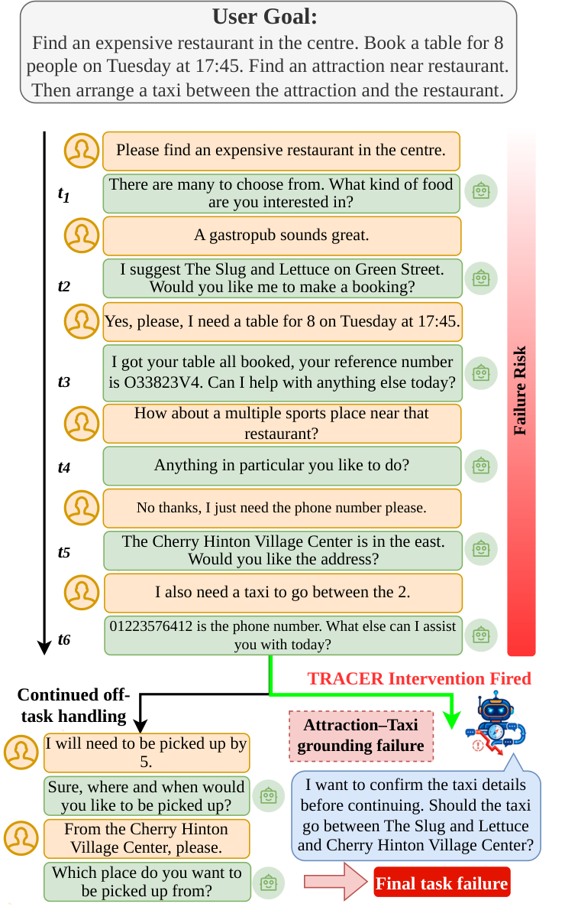
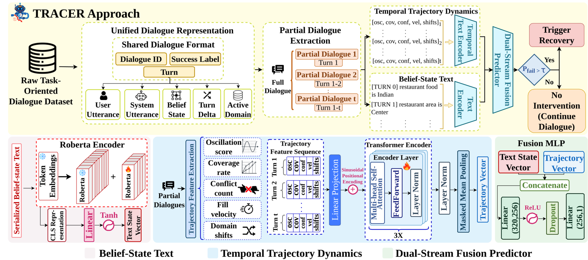
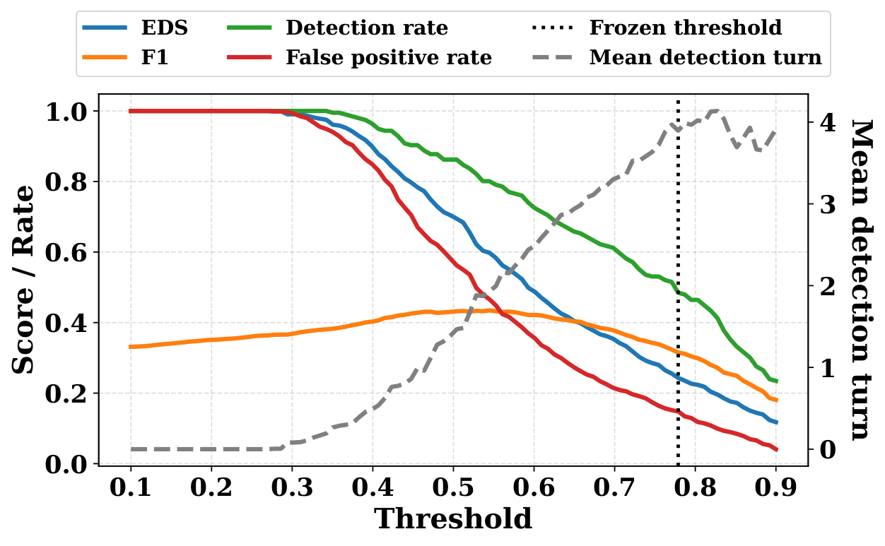
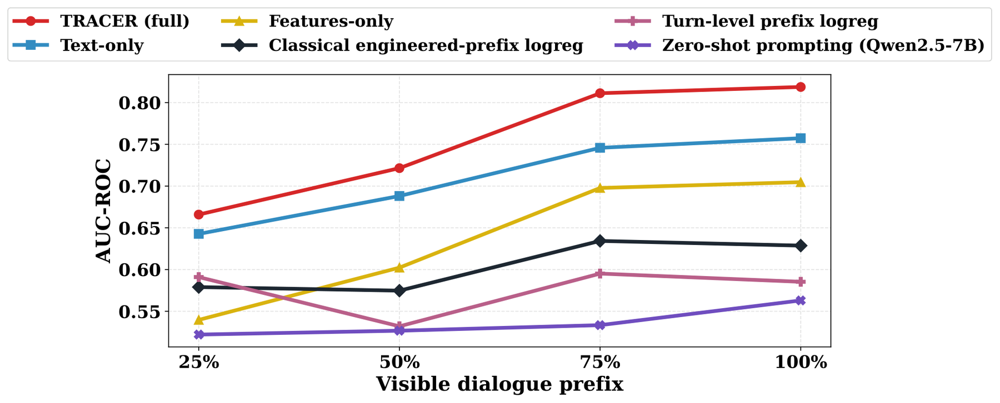

Introduction
Dialogues often fail before the final breakdown is obvious. TRACER forecasts eventual failure from partial context so recovery can fire earlier.

Figure 1. Task overview. The example shows a conversation that breaks down.
Paper
Task-oriented dialogue systems often fail before the final breakdown is obvious, but most evaluation only measures failure after the conversation has already gone wrong. We present TRACER, a method for early failure detection in task-oriented dialogue. TRACER predicts from a partial dialogue whether the full conversation will eventually fail by combining simple trajectory signals from belief-state changes with text representations of the evolving dialogue state. We evaluate the method in both oracle and generated belief-state settings, and test how well it works when only 25%, 50%, 75%, or 100% of the dialogue is visible. Across these settings, TRACER detects useful failure signals well before the end of the conversation and outperforms heuristic, classical, and single-stream baselines. Code: github.com/erfan-nourbakhsh/TRACER.
Method
Two streams: RoBERTa over serialized belief states, plus turn-level trajectory dynamics. Fuse representations to score failure risk and trigger recovery.

Figure 2. Overview of TRACER. Partial dialogues are encoded by a belief-state text stream and a temporal trajectory stream. The text stream uses RoBERTa to encode serialized belief states, while the trajectory stream models turn-level dialogue-state dynamics. Their representations are fused to predict failure risk and decide whether to trigger recovery.
Results
TRACER leads on AUC-ROC and F1. Some heuristics get higher EDS only by triggering aggressively.
| Category | Model | Belief | AUC-ROC ↑ | F1 ↑ | EDS ↑ | Det. Turn ↓ |
|---|---|---|---|---|---|---|
| Heuristic | No intervention | oracle | .500 | .000 | .000 | ∞ |
| Heuristic | Fixed-schedule (every 3) | oracle | .499 | .236 | .690 | 2.00 |
| Heuristic | Feature-threshold ensemble | oracle | .535 | .286 | .864 | 0.25 |
| Classical | logreg (engineered) | oracle | .600 | .351 | .728 | 1.03 |
| Zero-shot | Qwen2.5-7B | oracle | .531 | .321 | .772 | 1.32 |
| Few-shot | Llama-3.1-8B | oracle | .492 | .337 | .993 | 0.06 |
| Ours | TRACER | generated | .617 | .370 | .751 | 1.22 |
| Ours | TRACER | oracle | .741† | .463† | .727 | 1.36 |
Table 1. Main failure-forecasting results on MultiWOZ (selected rows). † Significantly better than best classical and best LLM baseline (p < 0.0001, paired bootstrap).
Ablation
Fusion beats features-only and text-only under both generated and oracle belief states.
| Model | Belief | AUC-ROC ↑ | F1 ↑ |
|---|---|---|---|
| Stream A only (features) | generated | .554 | .337 |
| Stream A only (features) | oracle | .623 | .363 |
| Stream B only (text) | generated | .583 | .332 |
| Stream B only (text) | oracle | .692 | .432 |
| TRACER | generated | .617 | .370 |
| TRACER | oracle | .741 | .463 |
Table 2. Ablation on TRACER streams under oracle and generated belief-state inputs.

Figure 3. Threshold tradeoff on the development set. Lower thresholds improve early detection but sharply increase false positives.
Partial Context
Fixed-context forecasting: useful signal already at 50% and 75% of the dialogue, not only at completion.

Figure 4. Fixed-context forecasting: TRACER recovers strong predictive signal from partial context, with substantial gains at 50% and 75% of the dialogue.
Conclusion
@inproceedings{nourbakhsh-etal-2026-tracer,
title = "{TRACER}: Early Failure Detection for Task-Oriented Dialogue",
author = "Nourbakhsh, Erfan and
Slavin, Rocky and
Yang, Ke and
Rios, Anthony",
booktitle = "Proceedings of the 27th Annual Meeting of the Special Interest Group on Discourse and Dialogue",
month = aug,
year = "2026",
address = "Atlanta, Georgia, USA",
publisher = "Association for Computational Linguistics",
url = "https://aclanthology.org/2026.sigdial-1.44/",
pages = "614--635",
}